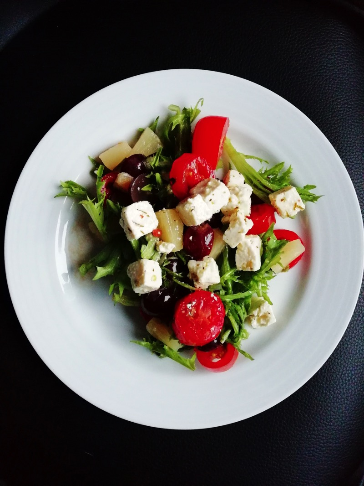

Greek Salat

Description
It is one of my favorite summer and barbecue salads.
Greek farmer's salad is quick and easy to make in 20 minutes with just a few ingredients, healthy, low carb, light and refreshing, whether as a starter, side dish or small main course.
Ingredients
- 1 cucumber(s)
500 g tomato(s)
2 onions)
200 g feta cheese
oregano
1 jar of olives, black, about 100 g
- 2 peppers, red and green
- 200 g feta cheese
- 00 g feta cheese
- oregano
- 1 jar of olives, black, about 100 g
Steps
- Wash the cucumber and cut into thin slices or pieces without peeling.
- Wash the peppers, deseed and cut into thin strips.
- Wash and chop the tomatoes.
- Peel onions and cut into fine rings.
- Dice sheep's cheese and sprinkle with oregano.
- Drain the olives and place in a bowl with the cucumber, peppers, tomatoes, onions and feta cheese.
- Mix olive oil, lemon juice, salt and pepper into a sauce and pour over the salad. Stir.
Home